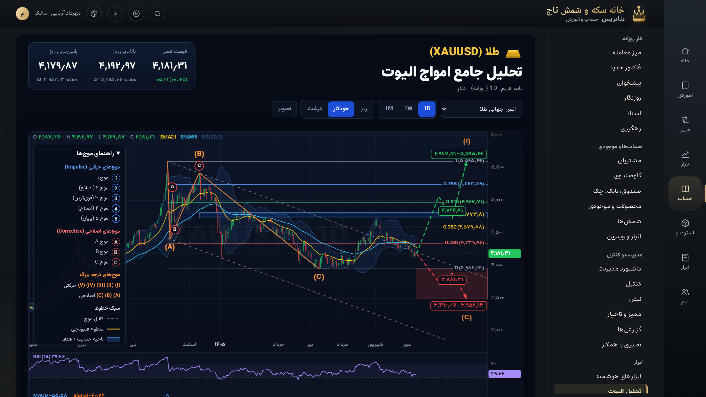

نور را بشکن، موج را بشمار.

تحلیل الیوت · در بازار و در دفاتر
عاملها فکر میکنند؛
عدد را موتور میسازد.


یک اپ، پانزده پوسته · همه یکدست
بئاتریس
حساب درست، آموزش واقعی، تحلیل شمرده، طراحی قابل ساخت.
beatris-production-68ac.up.railway.app
نمودار با داده نمونه و موتور واقعی تحلیل بئاتریس · تصاویر از نسخه نمایشی